기상기사 (2015-03-08 기출문제)
1과목: 기상관측법
1. 다음 중 기본 운형이 아닌 것은?
- 권운(Cirrus)
- 층운(Stratus)
- 적운(Cumulus)
- 유방운(Mamma)
(정답률: 100%)

2. 다음 중 설척을 이용하여 적설을 직접 관측하는 경우에 틀린 것은?
- 적설판 내에서 2~3개 면을 측정하여 평균한다.
- 신적설최심은 하루 중 내린 적설의 최고값을 말한다.
- 3시간 단위의 적설값은 정시에 측정한 값을 취한다.
- 적설이란 관측장소(노장)의 지면을 절반 이상 덮고 있는 것을 말한다.
(정답률: 60%)
3. 다음 중 동물 계절 관측 시 대상동물이 아닌 것은?
- 기러기
- 제비
- 종달새
- 학
(정답률: 81%)
4. 풍향에 관한 중 틀린 것은?
- 풍향은 바람이 불고 있는 방향을 진방위(震方位)에 의해 나타내는 것이 일반적이다.
- 풍향은 일반적으로 풍속이 강할 때에 자주 변한다.
- 풍향은 날씨변화와 밀접한 관계가 있다.
- 풍향의 급격한 변화는 전선(front)의 통과를 나타낸다.
(정답률: 96%)
5. 아지랑이에 관한 다음 설명 중 옳지 않은 것은?
- 기상현상으로 볼 수 없는 물리적 현상이다.
- 대기현상의 일종이다.
- 지면 가까운 대기층의 급격한 굴절로 나타난다.
- 주로 일사가 강할 때 육지에 나타난다.
(정답률: 80%)
6. 태양이 구름이나 안개 등에 의하여 가려지지 않고 지면을 비친 시간을 무엇이라고 하는가?
- 일사량
- 일조시간
- 일조율
- 가조시간
(정답률: 84%)
7. 기상레이더에서 비나 눈 등에 의해 생기는 에코(echo)는?
- 층상에코
- 이상전파에코
- 파랑에코
- 지형에코
(정답률: 89%)
8. 바람에 대한 설명 중 틀린 것은?
- 국제적으로 일기도상에서 풍향은 관측시각 전 10분간의 평균이다.
- 보통 정온은 풍향이 없는 것으로 간주한다.
- 풍속은 관측 시각을 중심으로 전ㆍ후 10분간의 평균 풍속이다.
- 풍향은 원칙적으로 장애물이 없고 평탄한 곳의 지상 10m에서의 값이다.
(정답률: 88%)
9. 다음 중 수은 기압계의 동작원리로 가장 적합한 것은?
- Bernoulli의 정리
- Pascal의 원리
- Torricelli의 진공도를 이용한 원리
- Keppler의 법칙을 이용한 원리
(정답률: 88%)
10. 다음 중 실내의 불쾌지수(discomfort index, Dl)에 고려되지 않는 기상요소는?
- 건구온도
- 습구온도
- 습도
- 바람
(정답률: 88%)
11. 단파적외 채널(3.70~4.00μm)의 위성영상에 대한 설명으로 옳지 않은 것은?
- 단파적외 채널은 저온에서도 잡음이 거의 없다.
- 태양복사 반사량과 지구복사 방출양이 혼합되기 때문에 낮에는 해석이 어렵다.
- 단파적외 채널은 고온에서 민감도가 크기 때문에 산불 등을 탐지하기가 좋다.
- 반사도 차를 이용하면 수적운과 빙정운과 빙정운을 구분할 수가 있다.
(정답률: 63%)
12. 증발계에 대한 설명이 틀린 것은?
- 대형의 것은 구경이 120cm나 되는 철제용기로 국제적인 표준으로 되어 있다.
- 소형의 것은 직경 20cm의 동제용기이며 기상대 등에서 널리 사용된다.
- 소형의 것보다 대형의 것이 바람직하다.
- 증발계는 직사광선을 받지 않도록 설치한다.
(정답률: 84%)
13. 정지궤도 기상위성은 모두 영상기(imager)를 탑재하고 있다. 이들 영상기에서 측정되는 파장대가 아닌 것은?
- 0.31~0.38μm
- 0.55~0.75μm
- 3.70~4.00μm
- 10.5~11.5μm
(정답률: 97%)
14. 운량관측에서 천공(天公)의 일부분이 산 또는 다른 장애물로 가져 있을 때의 적당한 관측방법은?
- 가려진 부분에 구름이 연장되어 있는 것으로 본다.
- 가려진 부분에 구름이 없는 것으로 본다.
- 가려진 부분을 제외한 나머지의 하늘에 대한 비율을 기준으로 한다.
- 가려진 부분 가까이의 구름분포를 고려하여 추정한다.
(정답률: 96%)
15. 다음과 같은 특징을 가진 구름은?
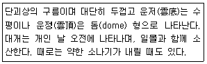
- 층운(St)
- 고적운(Ac)
- 적운(Cu)
- 적란운(Cd)
(정답률: 67%)
16. 절설상당수량(water equivalent of snow cover)에 대한 설명이 틀린 것은?
- 어느 장소의 적설을 전부 녹였을 때의 물의 깊이이다.
- 적설을 물로 녹여서 1cm2 당의 중량으로 정의해도 좋다.
- 눈이 내린 만큼을 수자원으로 이용할 수 있다는 의미이다.
- 강수량과 같이 mm단위로 표현해도 좋고, 1cm2당 그램 수, 즉 g/cm2으로 이용할 수도 있다.
(정답률: 92%)
17. 철관 자중 온도계는 어느 정도의 깊이 이상 되는 자중온도를 관측하는데 사용하는가?
- 0.5m
- 1m
- 3m
- 5m
(정답률: 53%)
18. 해양기상관측부이에서 관측하는 요소가 아닌 것은?
- 기온
- 습도
- 강수량
- 수은
(정답률: 74%)
19. 세계기상기구(WMO)에서 지정한 레윈존데의 분당 상승속도로 적절한 것은?
- 분당 100~120m
- 분당 200~220m
- 분당 300~320m
- 분당 400~420m
(정답률: 80%)
20. 기상관측 기기를 선택할 시에 고려해야 할 조건이 아닌 것은?
- 측기의 측정범위는 그 지방의 기상조건에 알맞은 것으로 한다.
- 취급이 간편하고 결과를 빨리 얻을 수 있어야 한다.
- 측기의 감도는 정밀도와 역의 관계에 있다.
- 가능한 한 규격이 같은 것을 이용하여야 한다.
(정답률: 85%)
2과목: 대기열역학
21. 건조 공기가 수증기를 포함하게 되는 경우 공기의 평균 분자량은 어떻게 변하는가?
- 작아진다.
- 커진다.
- 변화 없다.
- 경우에 따라 다르다.
(정답률: 57%)
22. 보편 기체상수(Universal gas constant) 값으로 알맞은 것은?
- 약 8×107 erg mol-1K-1
- 약 7×102 J g-1K-1
- 약 8×10-11 cal/cm2ㆍminㆍdeg4
- 약 1×103 J g-10K-1
(정답률: 68%)
23. 다음의 건조공기에 대한 열역학선도에서 단열과정은?
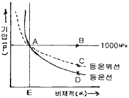
- A→B
- A→C
- A→D
- A→E
(정답률: 86%)
24. 다음 중 고도에 따른 기온감률이 가장 큰 것은?
- 건조단열대기
- 등온대기
- 동밀대기
- 표준대기
(정답률: 60%)
25. 온도가 T인 등온대기에서 임의의 고도에서의 기압 P를 정역학 방정식과 상태 방정식을 이용하여 나타내면? (단, 여기서 Po는 지면기압, Z는 고도, CP와 R은 각각 정압비열, 비기체상수, g는 중력가속도이다.)
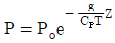
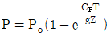
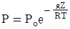
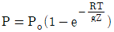
(정답률: 50%)
26. 습윤단열감률과 건조단열감률이 다른 이유로 가장 주요한 원인이 되는 것은?
- 잠열
- 태양열
- 상승속도
- 기압변화
(정답률: 95%)
27. 대기 중의 에너지를 위치에너지, 내부에너지, 운동에너지로 크게 나누어 볼 때 내부에너지가 증가하면 위치에너지는 어떻게 되는가?
- 증가한다.
- 점점 감소한다.
- 없어진다.
- 변환한다.
(정답률: 89%)
28. 지구 대기의 건조단열감률은 얼마인가?
- 10 Kㆍkm-1
- 1 K/100 hPa
- 6Kㆍkm-1
- 0.6K/100 hpa
(정답률: 74%)
29. 포화수증기압은 무엇에 따라 변하는가?
- 기압
- 기온
- 풍속
- 습도
(정답률: 55%)
30. 다음 중 포화단열팽창 과정에서 보존되는 것은?
- 상대습도
- 수중기압
- 혼합비
- 온위
(정답률: 55%)
31. Clausius-Clapeyron 방정식은 무엇을 설명하는 식인가?
- 응결고도
- 습도
- 잠열
- 포화수증기압
(정답률: 91%)
32. 열역학 제1법칙은 3종류의 에너지의 보존의 관계식이다. 이 3종류가 옳게 짝지어진 것은?
- 열량, 일, 내부에너지
- 운동에너지, 일, 내부에너지
- 열량, 위치에너지, 내부에너지
- 열량, 일, 마찰열
(정답률: 79%)
33. 건조공기의 기체상수를 Rd, 수증기의 기체상수를 Rv라고 하면 Rd/Rv는 약 얼마인가?
- 0.355
- 0.427
- 0.622
- 1.608
(정답률: 96%)
34. 정압비열을 Cp, 정적비열을 Cv, 비기체상수를 R, 중력가속도를 g라 할 때, 건조단열감률을 바르게 설명한 것은?
- Cp/Cv
- R/Cp
- g/Cp
- R/Cv
(정답률: 66%)
35. 비열(比熱, specific heat)에 대한 설명 중 틀린 것은?
- 1g의 물체를 1℃ 올리는데 필요한 열량을 의미한다.
- 체적이 일정할 때의 비열을 정적비열이라고 한다.
- 기압이 일정할 때의 비열을 정압비열이라고 한다.
- 주어진 열량을 온도로 나눈 것, 즉 단위 온도에 대한 주어진 열량의 비(比)를 비열이라고 한다.
(정답률: 95%)
36. 상태방정식 PV=RT에 대한 설명이 틀린 것은?
- P는 기체의 압력을 뜻한다.
- V는 기체 1몰의 부피이다.
- R는 비기체상수이다.
- T는 절대온도로 나타낸 기체온도이다.
(정답률: 85%)
37. 기온이 15℃이고 노점온도가 10℃일 때의 응결고도는 대략 얼마인가?
- 125m
- 625m
- 3125m
- 12500m
(정답률: 81%)
38. 열역학 제2법칙의 설명 중 옳지 않은 것은?
- 에너지보존의 법칙을 표현한 것이다.
- 열역학 과정의 방향을 규정한 것이다.
- 비가역과정에서 엔트로피(entropy)의 순환적분은 0보다 크다.
- 가역과정에서 엔트로피(entropy)의 순환적분은 0이다.
(정답률: 77%)
39. 균질 대기의 고도는 어떻게 표현되는가? (단, 여기서
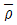
는 균질 대기의 밀도, g는 중력 가속도, P0는 지면 기압, Cu와 R은 각각 정적비열과 비기체상수이다.)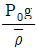
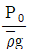
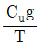
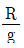
(정답률: 83%)
40. 건조공기의 분자량은?
- 약 19g
- 약 21g
- 약 29g
- 약 36g
(정답률: 60%)
3과목: 대기운동학
41. 중위도지방에 편서풍이 고도에 따라 증가하는 이유는?
- 온도풍의 영향
- 대기밀도의 고도에 따른 감소
- 마찰력의 고도에 따른 감소
- 온도의 고도에 따른 감소
(정답률: 39%)
42. 다음 중 거칠기 길이(roughness length)가 가장 긴 것은?
- 경작지
- 모래 해변
- 대도시 주거지
- 툰드라 지대
(정답률: 79%)
43. 소용돌이도에 관한 설명 중 옳은 것은?
- 직선운동을 하는 유체의 소용돌이도는 항상 0이다.
- 곡선운동을 하는 유체의 소용돌이도는 항상 0이 아니다.
- 제트류의 북쪽이 일반적으로 소용돌이도가 더 크다.
- 종관규모의 운동에서 일반적으로 행성소용돌이도보다 상대소용돌이도의 값이 더 크다.
(정답률: 59%)
44. 에크만층(Ekman layer)에 대한 설명 중 옳지 않은 것은?
- 에크만 층 내에서도 저기압 쪽으로 향하는 흐름이 있다.
- 에디 점성계수를 높이에 비례하여 변화하는 것으로 가정한다.
- 바람은 나선형 구조를 가진다.
- 기압경도력, 전향력, 난류 항력이 균형을 이룬다.
(정답률: 55%)
45. 등압면의 고도를 z라 할 때, 다음 중 저기압의 중심을 나타낸 식은?
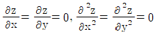
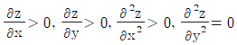
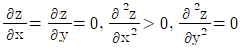
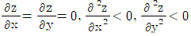
(정답률: 67%)
46. 바다와 산으로부터 멀리 떨어진 외딴 평지에 활주로가 놓여 있다. 맑은 날의 경우, 이 활주로에서 언제 바람이 가장 강하게 불겠는가?
- 아침
- 점심
- 저녁
- 새벽
(정답률: 80%)
47. 다음 중 편서풍 파동이 대기 대순환에 미치는 영향에 해당되지 않는 것은?
- 남북의 열교환
- 남북 대기간의 물질 교환
- 동서 평균류의 남북 경도 완화
- 페럴 순환세포를 유지하려는 경향
(정답률: 68%)
48. 로스비파(Rossby wave)에 대한 설명 중 옳지 않은 것은?
- 파의 진행은 절대와도 보존법칙으로 설명할 수 있다.
- 지구 대기에서 가장 긴 파장을 갖고 있다.
- 일반적으로 서진한다.
- 파의 위상속도는 파장의 함수가 아니다.
(정답률: 65%)
49. 선형류와 연관된 두 가지 힘은?
- 전향력, 기압경도력
- 전향력, 원심력
- 기압경도력, 원심력
- 마찰력, 기압경도력
(정답률: 60%)
50. 북반구에서 에디 열속의 남북 수송량이 가장 큰 위도대는?
- 북위 20도
- 북위 30도
- 북위 40도
- 북위 50도
(정답률: 50%)
51. 다음 중 북반구에서 연중 풍향이 가장 일정한 위도대는?
- 15~30°
- 30~45°
- 45~60°
- 60~75°
(정답률: 62%)
52. 다음 중 종관 스케일의 운동의 거리규모로 가장 적합한 것은?
- 1km 이하
- 1~100km
- 100~5,000km
- 1,000~40,000km
(정답률: 78%)
53. 어느 한 관측소의 상공 700hPa에서 20kt의 북서풍, 500hPa에서 15kt의 서풍이 관측되었다. 다음 중 이 정보로서 알 수 있는 사실이 아닌 것은?
- 700hPa 고도에서 한냉이류가 있다.
- 700hPa~500hPa 사이에서 풍향이 반전하고 있다.
- 700hPa~500hPa 기층의 평균바람은 서북서풍이다.
- 700hPa~500hPa 사이에서 동쪽보다 서쪽의 온도가 낮다.
(정답률: 44%)
54. 북반구에서의 온도풍을 옳게 설명한 것은?
- 제트류를 의미한다.
- 하층의 지균풍에서 상층의 지균풍을 벡터적으로 뺀 바람이다.
- 등고선에 나란히 분다.
- 찬 곳을 왼쪽에 두고 분다.
(정답률: 80%)
55. 직교 좌표계(Cartesian coordinate)에서 수평발산(divergence)의 옳은 표현은? (단, u, v는 x, y 방향으로의 속도 성분)
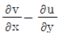
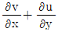
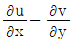
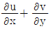
(정답률: 83%)
56. 다음 중 (x, y, θ)좌표계(lsentropic coordinates)에서 표시된 수평기압 경도력은? (단, ρ는 공기밀도, P는 기압, T는 기온, R은 기체상수, Cp는 정압비열, ø는 지오포텐셜을 표시한다.)
- -▽(RT+ø)
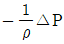
- -▽(CpT+ø)
- -▽ø
(정답률: 46%)
57. 지구 전향력(Coriolis force)의 설명으로 틀린 것은?
- 북반구에서는 운동하는 물체에 우측 직각으로 작용한다.
- 절대 좌표계에서 작용될 수 있는 힘이다.
- 이 힘에 의해서는 일을 할 수 없다.
- 운동방향을 변화시켜 준다.
(정답률: 32%)
58. 동서 방향으로 등압선이 직선으로 놓여 있을 때 세 가지 힘이 균형을 이루며 바람이 불 수 있다. 이 때 이 세가지 힘에 속하지 않는 것은?
- 중력
- 기압경도력
- 전항력
- 마찰력
(정답률: 79%)
59. y-방향의 속도분포가 u=3y2+60y-10(-100m≤y≤100m) 으로 주어진 직선류가 있다. 소용돌이도가 0이 되는 곳은?
- y=100m
- y=-100m
- y=10m
- y=-10m
(정답률: 69%)
60. 다음 중 ()에 들어갈 적합한 용어는?
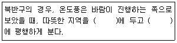
- 왼쪽, 평균 등압선
- 오른쪽, 평균 등압선
- 왼쪽, 평균 등온선
- 오른쪽, 평균 등온선
(정답률: 78%)
4과목: 기후학
61. 툰드라(Tundra) 기후는 어느 기후지역에 속하는가?
- 열대
- 온대
- 냉대
- 한대
(정답률: 82%)
62. 동안기후와 서안기후의 특성 설명 중 틀린 것은?
- 대륙의 동쪽 해안에 주로 동안기후가 나타난다.
- 우리나라 동해안은 동안기후, 서해안은 전형적인 서안기후이다.
- 서안기후는 동안기후에 비해 따뜻하다.
- 동안기후는 계절풍기후, 서안기후는 편서풍기후이다.
(정답률: 70%)
63. 다음 중 기후인자가 아닌 것은?
- 해발고도
- 바람
- 수륙분포
- 지형
(정답률: 91%)
64. 쾨펜 기후구분 중 ET에 대한 설명으로 적합하지 않은 것은?
- 툰드라 기후이다.
- 최난월 평균 기온이 0~10℃이다.
- 대륙의 북극해 주변에 나타난다.
- 연평균 기온이 0℃ 이하로서 식물이 자라지 못한다.
(정답률: 77%)
65. 지구상의 전 강수량의 1/2정도를 차지하는 지역은?
- 극 부근
- 중위도 편서풍대 부근
- 아열대 지역
- 적도 부근
(정답률: 73%)
66. 기온의 일변화에 대한 설명 중 틀린 것은?
- 최고기온은 보통 정오가 지난 오후 1~3시에 나타난다.
- 최고기온이 나타나는 시각은 정오 후 입사에너지와 방출에너지가 같아지는 시각이다.
- 최저기온은 일출 전에 나타나는 것이 보통이다.
- 최저기온이 나타나는 시각은 자정 이후 입자에너지와 방출에너지가 같아지는 시각이다.
(정답률: 62%)
67. 자연적인 기후변동이나 인간의 활동에 의해 기존의 사막이 확대되는 현상을 무엇이라고 하는가?
- 지구온난화
- 토지이용도 변화
- 사막화
- 열대화
(정답률: 91%)
68. 쾨펜(Koppen)에 의한 기후분류 중 연결이 잘못된 것은?
- Aw-사바나 기후
- ET-툰드라 기후
- Af-사막 기후
- Cf-온납슴윤 기후
(정답률: 68%)
69. 온실기체의 문제점은 한 번 대기 중에 방출되면 오랫동안 대기에 남아 지속적으로 지구온난화를 일으킨다는 것이다. 이산화탄소의 경우 일반적으로 대기 중에 얼마나 오랫동안 남아있는가?
- 1~5개월
- 1~2년
- 5~100년
- 45000~50000년
(정답률: 92%)
70. 우리나라의 최고, 최저기온의 연변화에 대한 설명 중 틀린 것은?
- 최고와 최저 기온의 연변화폭은 평균기온의 연변화폭과 비슷하다.
- 기온의 연교차는 강원내륙은 크고 제주도는 내륙보다 작은 편이다.
- 일최저기온은 일최고기온에 비하여 지형의 영향을 뚜렷이 받는다.
- 여름은 상대습도가 높아 최고 최저기온의 차이가 봄보다 크다ㅑ.
(정답률: 85%)
71. 태양상수의 정의와 관련이 없는 설명은?
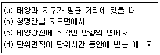
- (a)
- (b)
- (c)
- (d)
(정답률: 66%)
72. 다음 우리나라 지역 중 강수량이 여름에 집중하지 않는 것은?
- 중부내륙지방
- 울릉도 지방
- 서해중부 해안지방
- 남부 도서지방
(정답률: 83%)
73. 냉방이나 난방에 관계되는 기후적 시수(示數)로서 주로 다음 어느 요소를 많이 이용하는가?
- 일최고기온
- 일최저기온
- 도일(degre day)
- 불쾌지수(discomfort index)
(정답률: 74%)
74. 대기권으로 입사되는 태양에너지 중 지표면에 흡수되는 백분율은 약 얼마나 되나?
- 30%
- 50%
- 60%
- 70%
(정답률: 72%)
75. 대륙성 한대 기단이 자신보다 더 차가운 지표면 위로 이동하는 것을 표시한 것은?
- mTw
- cTw
- mPw
- cPw
(정답률: 76%)
76. 다음 중 지구상의 식생분포와 가장 밀접한 기후요소는?
- 기온과 바람
- 바람과 강수량
- 강수량과 기온
- 기압과 상대습도
(정답률: 91%)
77. 쾨펜법에 의해 우리나라에 해당되는 기후구분이 아닌 것은?
- Cfa
- Cwa
- Dwa
- Dwd
(정답률: 70%)
78. 다음 중 강수량의 영향인자와 가장 거리가 먼 것은?
- 기류의 수렴, 발산
- 대기층의 요란
- 지형
- 기온의 일교차
(정답률: 68%)
79. 푄(Fohm)과 보라(Bora)에 대한 설명 중 올바른 것은?
- 보라는 겨울을 중심으로 가을에서 봄에 걸쳐 현저하며 푄은 여름을 중심으로 봄ㆍ가을에 현저하다.
- 풍하측(Lee side)에서는 모두 습도는 높아지나. 기온은 푄은 높아지고 보라는 낮아진다.
- 푄은 기온이 내려감으로 체감은 상쾌하나 보라는 기온이 급상승하여 나른하고 두통이 온다.
- 보라와 푄은 모두 농작물에 이익을 주는 바람이다.
(정답률: 87%)
80. 지질시대에 대한 설명 중 틀린 것은?
- 신싱대는 3기와 4기로 나뉜다.
- Little ice age(소빙기)는 현세(Holocene)에 나타났다.
- 호모사피엔스는 신생대 3기에 출현했다.
- 중생대는 최초의 공룡이 출현하여 멸종한 기간까지라 할 수 있다.
(정답률: 71%)
5과목: 일기분석 및 예보론
81. 태풍에 관한 설명 중 틀린 것은?
- 중심이 주변보다 기압경도가 심하다.
- 바람이 반시계방향으로 돈다.
- 상층으로 갈수록 태풍의 세력이 강하다.
- 위험반원과 가항반원이 있다.
(정답률: 80%)
82. 온위(θ)의 고도(Z)에 대한 변화율로 대기의 수직안정도를 판별할 수 있다고 할 때, 다음 중 불안정한 경우는?
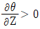
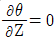
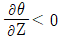
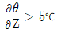
(정답률: 76%)
83. 현재일기(ww)의 숫자부호 30~35는 무엇을 나타내는가?
- 안개
- 먼지보라
- 이슬비
- 뇌우
(정답률: 69%)
84. 미지의 물리량을 기지의 물리량의 함수로서 수식화(數式化)하는 것은?
- 초기화
- 모수화
- 지균풍조사
- 객관분석
(정답률: 92%)
85. 로스비(Rossby)의 장파공식이 가장 절 적용되는 곳은?
- 지표면
- 300 hPa 등압면
- 600 hPa 등압면
- 권계면(대류권 끝면)
(정답률: 41%)
86. 종관규모 운동에서 연직 속도의 규모는?
- 1cmㆍsec-1
- 10 cmㆍsec-1
- 10-2cmㆍsec-1
- 102 cmㆍsec-1
(정답률: 40%)
87. 불포화 공기에서 성립하는 관계는? (단, Td:노점온도, Tw:습구온도, T:기온)
- Td＜Tw＜T
- T＜Tw＜Td
- Td＜T＜Tw
- Tw＜Td＜T
(정답률: 62%)
88. 이류도에 관한 설명 중 틀린 것은?
- 중간층의 기류가 층후값이 큰 쪽에서 작은 쪽으로 횡단할 때 온난이류라 한다.
- 온난이류는 적색으로 표시한다.
- 기류가 층후선과 평행이면 중립이류라 한다.
- 한랭이류는 표시하지 않는다.
(정답률: 92%)
89. 온대저기압의 발생과 제일 밀접한 관계가 있는 것은?
- 편서풍파동
- 무역풍파동
- 해들리 순환
- 극편동풍
(정답률: 54%)
90. 대기 중에서 어떤 공기덩이의 기온과 노점온도를 비교한 내용 중 맞는 것은?
- 노점온도는 기온보다 항상 높다.
- 노점온도는 기온보다 항상 낮다.
- 노점온도는 기온과 같을 수도 있다.
- 노점온도와 기온은 항상 같다.
(정답률: 62%)
91. 찬기단의 지역에 따뜻한 기단이 이동하면서 생기는 전선은?
- 폐색전선
- 온난전선
- 정체전선
- 한랭전선
(정답률: 67%)
92. 저기압의 발생과 그 특성에 관한 설명 중 틀린 것은?
- 우리나라에 영향을 주는 저기압은 한기단과 난기단이 수렴하는 곳에 상층 기압골이 접근하면서 발생한다.
- 지표의 국지적 가열로 인해 열적 저기압이 발생하기도 한다.
- 절리 저기압(cut-off low)은 이동 속도가 늦고, 악기상을 유발할 때가 많다.
- 지형에 의해 산맥의 풍하 측에 발생하는 저기압은 바람이 약해지면 소멸되나, 위치한 지역에 악기상을 유발한다.
(정답률: 53%)
93. 라디오존데에서 직접 측정되는 기상 요소는?
- 풍향, 풍속
- 고도, 강수량
- 뇌전, 운고
- 기온, 기압, 습도
(정답률: 92%)
94. 700hPa 일기도에서 강한 상승기류가 존재할 때 500hPa 일기도 상에서는 다음 중 어느 것을 예상할 수 있는가?
- 양(+)의 와도
- 음(-)의 와도
- 순압대기
- 기압의 능(Ridge)
(정답률: 80%)
95. 유선(stream line)에 관한 설명 중 틀린 것은?
- 정해진 시간에서 공기 흐름의 분포를 나타낸 것이다.
- 공기덩어리의 시간 경과에 따른 이동경로를 나타낸 것이다.
- 저위도에서는 전선 분석용으로 사용한다.
- 공기의 흐름이 일정하게 유지되면, 유적과 일치한다.
(정답률: 47%)
96. 평평한 육상에서 지상풍과 등압선의 교각(交角)은?
- 0도
- 25~35도
- 45~55도
- 90도
(정답률: 35%)
97. 흑체복사의 강도가 최대가 되는 파장은 그 흑체의 절대온도에 반비례한다는 이론은 누구의 법칙인가?
- 키르호프(Kirchhoff)
- 빈(Wien)
- 스페탄 볼즈만(Stefan-Boltzmann)
- 플랑크(Plank)
(정답률: 86%)
98. 다음 중 수평적인 규모가 가장 큰 대기 운동 현상인 것은?
- 토네이도(tornado)
- 장파(planetary wave)
- 태풍(hurricane)
- 적란운(cumulonimbus)
(정답률: 72%)
99. 다음 중 대류권 중충 분석이 주로 이루어지는 일기도는?
- 지상 일기도
- 850 hPa 일기도
- 500 hPa 일기도
- 300 hPa 일기도
(정답률: 70%)
100. 상대와도의 곡률항과 시어(shear)항에 대한 설명으로 틀린 것은?
- 일정한 속도를 갖는 흐름에서는 곡률할만이 외도의 부호를 결정한다.
- 유선이 직진일 때 풍속이 진행방향의 왼쪽에서 검소하면 고기압성 와도이다.
- 곡률이 저기압성이고 풍속의 감소가 진행방향의 왼쪽에 있을 때 외도는 저기압성이다.
- 곡률은 고기압성이고 풍속의 증가가 진행방향의 왼쪽에 있을 때 와도는 고기압성이다.
(정답률: 45%)